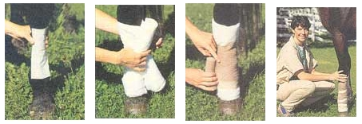

Treating Hoof And Leg Injuries
December/January 1996
Wrap a horse's leg in three easy steps.
By Andrea Looney, D.V.M.
We have 56 milling cows in our herd. They are well conditioned and being fed a ration balanced by a nutritionist. Fourteen cows have become lame in the past three weeks with swollen hocks. We use straw bedding. Our veterinarian isolated serum from the joints and diagnosed hygromas. What is the cause of this?
-Eddie Sequino
Carbondale, IL
To treat these, first try to increase the bedding. Straw bedding may become slippery and since trauma is the culprit, we don't want the animals to cause further damage when they fall. Sand bedding is extremely helpful. Three to five inches of clean, washed sand, free of dust and rocks, can be placed in each of the stalls using PVC piping across the back and boarding up front to keep it out of the drain and manger. Sand also helps eliminate laminitis from the herd and reduces environmental mastitis. The downside is the wear and tear on barn cleaners, and the fact that it may get into the teat cup, so be sure to clean milkers well.
You can also use rubber matting, but more secure bedding is usually necessary to help the animals. The big solution is to check out your environment to see where the trauma is coming from. Watch the pasture, walkways, and parlor to be sure the cows aren't slipping there as well. Some hygromas become infected if the trauma is heavy enough to cause open wounds. Be sure to keep the affected areas as clean and dry as possible, and check the skin frequently for scratches and deeper penetrating wounds.
We frequently end up with small cuts over the flex tendons of our pastured quarter horse mare. What's the best way to wrap a horse's leg?
-Damon Williams
Charlotte, NC
Wrapping a horse's leg may look pretty simple, but applying a secure, supportive bandage requires a practiced and sure hand. For most practical purposes, at least three layers are a must. First, the covering, usually a nonstick surgical pad, which keeps the medication or dressing in place. Second, the primary wrap which secures the covering and, more importantly, stabilizes and cushions the leg itself. Primary wraps are usually rolled cotton in cheese-cloth or folded gauze, or quilted leg wraps. The final wrap forms the outside covering, holding all layers in place and supporting the entire wrap. This layer is usually elastic wrap, cotton stable bandage, or some self-adhesive one-time-use stretch wrap.
The first step in applying an injury bandage is to examine and clean the wound. Dilution is the solution to pollution, so wash, wash, and wash the wound! If you must place a dressing on the wound, consult your vet, and see that all that goes on the wound is sterile or pretty close to it. Medication is best spread on the covering, then placed on the wound; this way it acts as glue to hold the covering in place. Next, hold the roil of primary wrap over the covering and begin to unravel the rolled or free end around the leg. Be prepared to move with the leg if the horse suddenly picks up his foot once you apply pressure. Be sure this layer has no wrinkles or creases that may irritate the leg, and be as uniform as possible in unraveling the wrap.
Insert the final wrap under the free end of the primary wrap and spiral down the leg, starting at the injury site. As you wrap, cover about one half of the last pass with the next turn. Be consistent with tension and snug evenly with each turn. Wrap downward first, back up, and then down again, ending over the injury. Secure this wrap with diaper pins, Velcro, or tape, as long as it's not circumferentially-secured.
Change any bandage daily. Check for pressure sores from the bandage, dean the wound, and massage the area under the bandage. Clean or replace the entire wrap as needed. Check below and above the bandage for swelling and feel for chilling or coolness of the coronary band, both of which could indicate a too-tight bandage. Always bear in mind the natural contour of the leg, and wrap accordingly.
Our herd of Jerseys has a high incidence of digital dermatitis. What would you suggest to help it?
-Cathy Hoffmark
Bellingham, WA
The typical lesion of digital dermatitis is a moist gray-brown exuding area with matted superficial hairs on the skin at the back of the foot, just between the bulbs of the heels. It has a foul odor, and underneath is a raw bed of granulation or fibrous tissue. You may also see inflamed areas between the claws, where it is sometimes referred to as interdigital dermatitis, or on the front of the foot. The precise cause of this dermatitis is unknown, but its often prompt response to antibiotics indicates that a bacterial infection is likely. Bactericides have been implicated as the culprits much of the time.
Local treatment is generally easy: Simply clean the affected areas and apply an antibiotic, formalin, or copper sulfate, although the first solution works best. You'll get the best response by walking cows into a herringbone parlor and spraying their heels with a pressure hose. Allow the cows to drain before walling them through the foot bath. Some sore-footed herds that are lame due to digital dermatitis have had marked improvement within 24 hours of this treatment.
What is Johne's disease? A test for a cow on our farm came up positive.
-Ted Goldman
Mansfield, OH
Johne's disease is a chronic wasting disease caused by Mycobacterium paratuberculosis. This organism enters most cattle when they are young, and after a lengthy incubation period, proliferates in the small intestine and local lymph nodes to cause intermittent diarrhea. The disease is difficult to diagnose because of its waxing and waning nature. Most adult cows that have the disease do not show signs of it until later stages, when they suffer from weight loss (despite a healthy appetite) and watery diarrhea. ELISA tests look for antibody to the bacteria and since some cattle may simply contact the bacteria, form antibody to it, and never get the disease, the gold standard in diagnosing the animal is the fecal culture in which the bacteria are isolated from the intestinal contents. Suspect Johne's disease farms have herd fecal cultures performed annually.
What can you do to keep Johne's off the farm? First, try to keep a closed herd. If you must add cows, make sure they are tested and from a negative herd. Second, prevent the infection in new calves. Clean the calving area. After calving, remove the calf immediately from the dam. Never let a positive cow calve on the farm. Use colostrum from negative cows and pasteurize it. Feed milk replacer from clean utensils after the colostrum. Keep all adult manure away from calves. Use calf hutches away from the adult yard. Keep the feed clean; in other words, don't use front end manure loaders to feed. Isolate all scouring animals. This is just a basic program. Be sure to consult your veterinarian to get a comprehensive program of testing and treating (culling) before the disease enters the whole herd.
 JOHN REIS/PHOTOLINK Hygromas are false bursa, fluid-filled sacs that appear over bony prominences after severe trauma, but if this trauma is repeated time and time again, the bruise cannot be resorbed because the surrounding tissue is so damaged. Consequently, fluid accumulates in a well delineated sac. |
 |
|